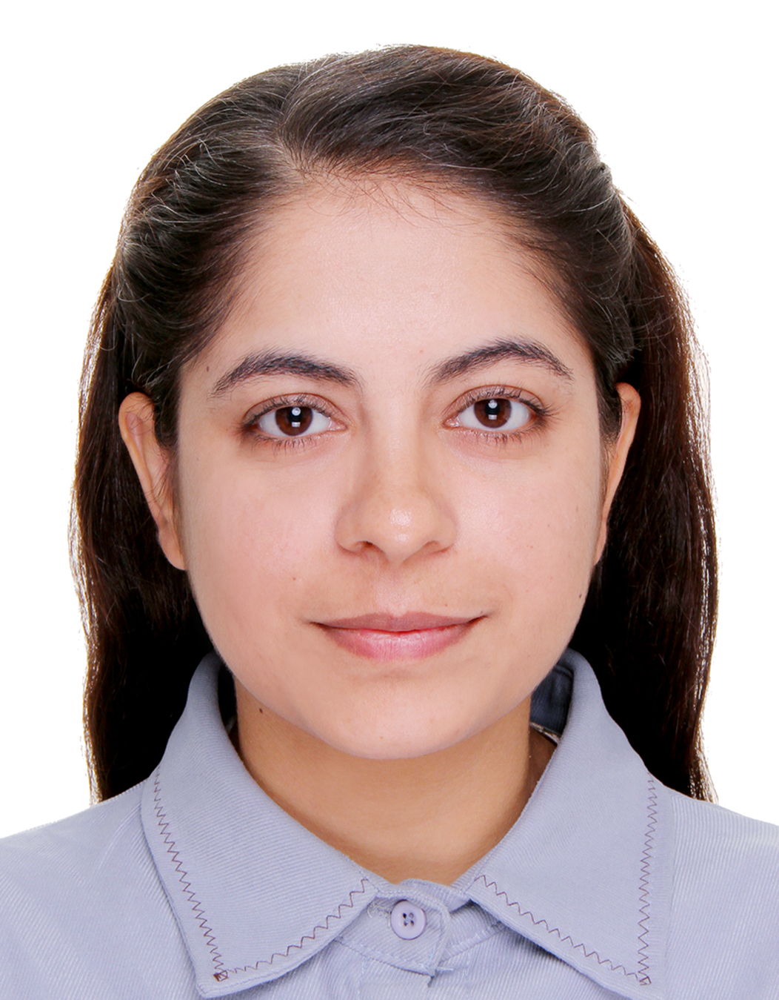

Advancing sustainable agriculture through insect molecular genetics, integrated pest management, and innovative biological control strategies.

I hold a Master's in Agricultural Entomology from the University of Agriculture Faisalabad, where I graduated with a CGPA of 3.64/4.0. My academic journey has been complemented by advanced research training in Insect Molecular Genetics at Zhejiang University, China — one of the world's top-ranked institutions.
My research spans insect genomics, integrated pest management (IPM), and sustainable cotton production. I am passionate about leveraging biological and bio-pesticide approaches to reduce chemical dependency in agriculture, alleviate rural poverty, and mitigate the effects of climate change on crop ecosystems.
I have also served as a Visiting Lecturer in Agricultural Entomology and as a Producing Unit Manager for the Better Cotton Initiative, connecting field practice with scientific knowledge.
Applying genomic tools — PCR, gene sequencing, and cloning — to decode insect biology and develop targeted pest control strategies.
Promoting biological control and bio-pesticide methods to replace chemical inputs, reduce environmental impact, and improve farmer livelihoods.
Investigating how shifting climate patterns alter pest populations — including fruit flies, desert locusts, and aphids — across agro-ecological zones.
Research in honeybee rearing, honey extraction, acetolysis, and floral pollen analysis for authenticating honey origin and composition.
Addressing pest and disease challenges in cotton and wheat ecosystems, with a focus on ecological zone management in southern Punjab, Pakistan.
Exploring cutting-edge microRNA technology for next-generation plant disease control, including novel approaches to citrus greening.
I welcome collaborations in sustainable agriculture, insect molecular genetics, IPM research, and academic exchanges. Feel free to reach out via email or connect on LinkedIn.